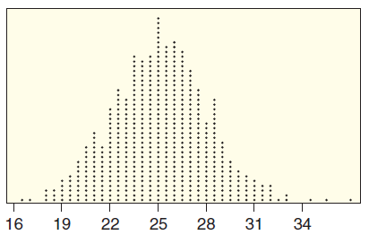
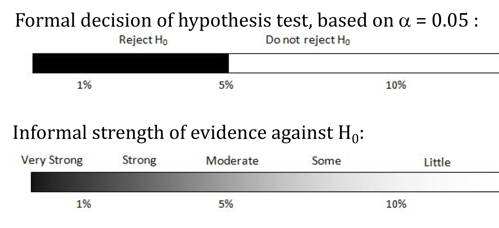

In each case, which p-value provides the strongest evidence against \(H_0\) and for \(H_a\)?
a) p-value = 0.95 or p-value = 0.02
b) p-value = 0.008 or p-value = 0.02
But how small is small?
First, split class members into a Treatment group and a Control group using a randomized comparative design.
Note which group you have been assigned to.
The significance level \(\alpha\) is the threshold below which the \(p\)-value is deemed small enough to reject the null hypothesis.
\(p\)-value \(<\alpha\) \(\Longrightarrow\) Reject \(H_0\)
\(p\)-value \(\ge \alpha\) \(\Longrightarrow\) Do not reject \(H_0\)
The most common value of \(\alpha\) is .05
For each test, write Yes or No: is the result significant at that level?
| 10% level | 5% level | 1% level | |
|---|---|---|---|
| A: p = 0.008 | |||
| B: p = 0.03 | |||
| C: p = 0.094 | |||
| D: p = 0.23 |
Turn and talk (30 sec): Which test gives the strongest evidence against \(H_0\)? Does the answer depend on which \(\alpha\) we choose?
An online retailer wants to know whether personalized product recommendations change customer behavior. For each p-value, write the formal decision and a conclusion in context. Use a 5% significance level.
State the null and alternative hypotheses (defining parameters when necessary).
Determine the value of the observed sample statistic.
Find the \(p\)-value.
Make a generic decision about \(H_0:\) Reject \(H_0\) or do not reject \(H_0\).
Write a sentence explaining the conclusion of the test in context, indicating whether or not we have convincing evidence for \(H_a\) and referring back to the question of interest.
The nutrition label on a brand of iced tea says that the average amount of sugar per bottle is 25 grams. A chemical analysis of a sample of 30 bottles finds a mean of 33.8 grams of sugar per bottle. Does this provide significant evidence that the true average is greater than 25?
Recall: the sample of 30 bottles had a mean of 33.8 g, and we are testing whether the true mean sugar is more than 25 g. The randomization distribution below shows 1000 randomization statistics (assuming \(H_0\) is true).


“Do not reject \(H_0\)” is not the same as “accept \(H_0\)”!
Lack of evidence against \(H_0\) is not the same as evidence for \(H_0\)!
Turn and talk (30 sec): A jury returns a verdict of “not guilty.” Does that prove the defendant is innocent? How is this like “do not reject \(H_0\)”?
In a hypothesis test of \(H_0: \mu = 18\) vs \(H_a: \mu > 18\), we obtain a p-value of 0.016. Using \(\alpha = 0.05\):
We conclude:
Which statement is correct?
The smaller the p-value, the stronger the evidence against \(H_0\). If \(p\)-value \(< \alpha\) (usually .05), we reject \(H_0\) and the results are statistically significant.
A formal test: state hypotheses, find the sample statistic and \(p\)-value, make a decision about \(H_0\), and conclude in context about \(H_a\).
Never accept the null: “do not reject \(H_0\)” means the test is inconclusive, not that \(H_0\) is true.